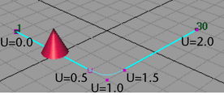
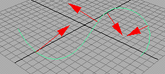
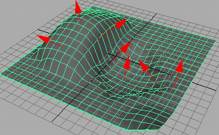

在“动画”(Animation)菜单集中，选择“约束 > 运动路径 > 连接到运动路径” >  (Constrain > Motion Paths > Attach to Motion Path)
(Constrain > Motion Paths > Attach to Motion Path)
选定对象放置在选定曲线上，该曲线将成为运动路径。 有关如何将对象约束到运动路径的信息，请参见将对象附加到运动路径。
- 时间范围(Time range)
- 这些设置沿曲线定义运动路径的开始时间和结束时间。
- 时间滑块(Time Slider)
- 将在“时间滑块”(Time Slider)中设置的值用于运动路径的起点和终点。
- 起点(Start)
- 仅在曲线的起点处或在下面的“开始时间”(Start Time)字段中设置的其他值处创建一个位置标记。对象将放置在路径的起点处，但除非沿路径放置其他位置标记，否则动画将无法运行。可以使用运动路径操纵器工具添加其他位置标记。
- 开始/结束(Start/End)
- 在曲线的起点和终点处创建位置标记，并在下面的“开始时间”(Start Time)和“结束时间”(End Time)字段中设置时间值。
- 开始时间(Start Time)
- 指定运动路径动画的开始时间。仅当启用了“时间范围”(Time Range)中的“开始”(Start)或“开始/结束”(Start/End)时可用。
- 结束时间(End Time)
- 指定运动路径动画的结束时间。仅当启用了“时间范围”(Time Range)中的“开始/结束”(Start/End)时可用。
- 参数化长度(Parametric Length)
- 指定 Maya 用于定位沿曲线移动的对象的方法。有两种方法可用：参数化空间和参数化长度。选择“参数化长度”(Parametric Length)将激活参数化长度方法；取消选择将激活参数化空间方法。
在参数化空间方法中，标记表示曲线 U 参数空间中的位置。在参数化长度方法中，标记以占曲线总长度百分比的形式表示位置。参数化长度方法也称为“分数模式”方法，因为路径求值基于路径曲线长度的若干分之几。
若要了解这两种方法之间的差异，请考虑具有均匀参数化和不均匀间距 CV 的曲线。
以上曲线是使用五个 CV 和均匀节间距来创建的。曲线的起点位于 U=0.0，同时曲线的终点位于 U=2.0。圆锥体是使用时间从 1 到 30 的路径动画来设置动画的。
如果使用参数化长度方法创建了圆锥体的路径动画，该圆锥体将沿曲线在 1 到 30 的时间范围内均匀移动。
如果使用参数化长度方法创建了圆锥体的路径动画，圆锥体将快速地从第一个移动到第二个 CV，然后缓慢地从第二个移动到第四个 CV，然后再次快速地从第四个移动到第五个 CV。这是因为第二个和第四个 CV 被大致放置在曲线的 U=0.5 和 U=1.5 参数化点上。这些点占据总参数化曲线的一半。
在参数空间中，对象平滑地从 U=0.0 移动到 U=2.0。在世界空间中，对象在从 8 到 23（大约）的时间范围内的移动很少，这与必须在相应的较小曲线长度中移动较大参数距离相吻合。
使用参数空间方法的好处是，如果已经花费很多时间调整对象沿曲线移动的计时，则可以将 CV 添加到曲线的起点或终点，而不会影响曲线现有部分上的运动计时。
使用参数化长度方法的好处是，可以很轻松获得对象运动的平滑计时，而无需插入计时标记来优化对象沿路径曲线的计时。
- 跟随(Follow)
- 如果启用，Maya 会在对象沿曲线移动时计算它的方向。默认情况下启用该选项。
Maya 使用前方向向量和上方向向量来计算对象方向。Maya 将对象的局部轴与前方向向量和上方向向量对齐，以便它知道在沿曲线移动时应当指向上方向和前方向。
在沿曲线的任意点上，指向移动方向的前向量与与曲线的切线对齐。上方向向量与切线垂直，但您仍必须告诉 Maya 哪个与切线的的垂直方向是您希望的上方向。若要这么做，需要指定一个上方向向量对齐的世界上方向向量。使用“世界上方向类型”(World Up Type)、“世界上方向向量”(World Up Vector)和“世界上方向对象”(World Up Object)选项指定世界上方向向量。
需要告诉 Maya 应对齐对象的哪个局部轴与前方向向量，以及那个应与上方向向量对齐。若要查看对象的局部轴，请选择该对象，然后选择(Display > Transform Display > ocal Rotation Axes)。然后，指定哪个局部轴与带“前方向轴”(Front Axis)的前方向向量对齐。还指定哪个局部轴与带“上方向轴”(Up Axis)的上方向向量对齐。最后，指定上方向向量本身对齐的世界向量类型（“世界上方向类型”(World Up Type)）。
世界上方向向量为您提供控制哪个上方向向量被视为上方向的能力。其中的一个优点是，可以在对象沿曲线移动时修正任何突然翻转问题。例如，可以使世界上方向向量是某些其他对象的局部轴，如定位器。然后，可以通过操纵定位器，直接控制世界上方向向量的方向。
提示： 如果将指向曲线的摄影机附加为运动路径，禁用“跟随”(Follow)选项。 - 前方向轴(Front Axis)
- 指定对象的哪个局部轴（X、Y 或 Z）与前方向向量对齐。这将指定沿运动路径移动的前方向。
- 上方向轴(Up Axis)
- 指定对象的哪个局部轴（X、Y 或 Z）与上方向向量对齐。这将在对象沿运动路径移动时指定它的上方向。上方向向量与“世界上方向类型”(World Up Type)指定的世界上方向向量对齐。
- 世界上方向类型(World Up Type)
- 指定上方向向量对齐的世界上方向向量类型。选择包括“场景上方向”(Scene Up)、“对象上方向”(Object Up)、“对象旋转上方向”(Object Rotation Up)、“向量”(Vector)和“正常”(Normal)：
- 场景上方向(Scene Up)
- 指定上方向向量尝试与场景上方向轴（而不是世界上方向向量）对齐。世界上方向向量将被忽略。可以在“首选项”(Preferences)窗口指定场景的上方向轴。默认场景上方向轴是世界空间正 Y 轴。
- 对象上方向(Object Up)
- 指定上方向向量尝试对准指定对象的原点，而不是与世界上方向向量对齐。世界上方向向量将被忽略。该对象称为世界上方向对象，可通过“世界上方向对象”(World Up Object)选项指定。如果未指定世界上方向对象，上方向向量会尝试指向场景世界空间的原点。
- 对象旋转上方向(Object Rotation Up)
- 指定相对于某个对象的局部空间（而不是相对于场景的世界空间）定义世界上方向向量。在相对于场景的世界空间变换上方向向量后，其会尝试与世界上方向向量对齐。上方向向量尝试对准原点的对象被称为世界上方向对象。可以使用“世界上方向对象”(World Up Object)选项指定世界上方向对象。
- 向量(Vector)
- 指定上方向向量尝试与世界上方向向量尽可能近地对齐。默认情况下，世界上方向向量是相对于场景的世界空间定义的。“使用世界上方向向量”(Use World Up Vector)以指定世界上方向向量相对于场景世界空间的位置。
- 法线(Normal)
- 指定“上方向轴”(Up Axis)指定的轴将尝试匹配路径曲线的法线。曲线法线的插值不同，这具体取决于路径曲线是世界空间中的曲线，还是曲面曲线上的曲线。
如果路径曲线是世界空间中的一条曲线，那么曲线法线是曲面上任何一点指向曲线曲率中心的方向。这可以通过下图的箭头来说明，这表示在各种点的曲线法法线：
请注意，当曲线由凸面更改为凹面（反之亦然）形状时，曲线法线将翻转 180 度。当在路径中使用世界空间曲线时，这将使“上方向”(Up Direction)的“法线”(Normal)选项不是很理想。
如果路径曲线是曲面上的曲线，那么到曲线的法线是在曲面上的该点到曲面的法线。当路径曲线是在曲面上的曲线时，“法线”(Normal)选项将生成最直观的结果。

- 世界上方向向量(World Up Vector)
- 指定世界上方向向量相对于场景世界空间的方向。由于默认情况下 Maya 的世界空间是“Y 轴向上”，因此默认世界上方向向量指向世界空间正 Y 轴的方向 (0.0000, 1.0000, 0.0000)。
- 世界上方向对象(World Up Object)
- 在“世界上方向类型”(World Up Type)设定为“对象上方向”(Object Up)或“对象旋转上方向”(Object Rotation Up)的情况下指定世界上方向向量尝试对齐的对象。例如，可以将世界上方向对象指定为一个可以根据需要旋转的定位器，以便在对象沿曲线移动时防止任何突然的翻转问题。
- 反转上方向(Inverse Up)
- 如果启用该选项，则“上方向轴”(Up Axis)会尝试使其与上方向向量的逆方向对齐。
- 反转前方向(Inverse Front)
- 沿曲线反转对象面向的前方向。当尝试定向摄影机、使它沿曲线指向前方向时，这尤为有用。如果摄影机沿曲线指向后方向，则可单击“反转前方向”(Inverse front)，根据需要使摄影机沿曲线指向前方向。
- 倾斜(Bank)
- 倾斜意味着对象将朝曲线曲率的中心倾斜，该曲线是对象移动所沿的曲线（类似于摩托车转弯）。仅当启用“跟随”(Follow)选项时，倾斜选项才可用，因为倾斜也会影响对象的旋转。
路径动画会自动计算要发生的倾斜量，这取决于路径曲线的弯曲程度。可以使用“倾斜比例”(Bank Scale)和“倾斜限制”(Bank Limit)调整倾斜。
- 倾斜比例(Bank Scale)
- 如果增加“倾斜比例”(Bank Scale)，那么倾斜效果会更加明显。例如，如果“倾斜比例”(Bank Scale)设置为 2，则该对象将比默认倾斜要大两倍。
注： 可以为“倾斜比例”(Bank Scale)输入负值。该操作将导致对象向外倾斜，远离曲线曲率中心，而不是靠近曲率。例如，可以在为从过山车的一侧抛到另一侧的角色设置动画时使用该选项。
- 倾斜限制(Bank Limit)
- “倾斜限制”(Bank Limit)允许您限制倾斜量。例如，可能会增加“倾斜比例”(Bank Scale)以获得显著效果，但是这可能会在曲线过于弯曲时导致对象倾斜过多。该选项会按给定量限制倾斜。
注： 在曲线为直线时不会出现倾斜。